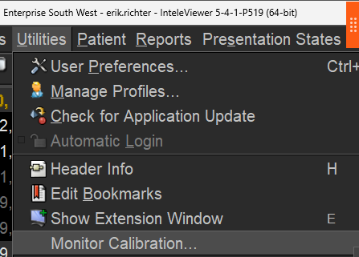
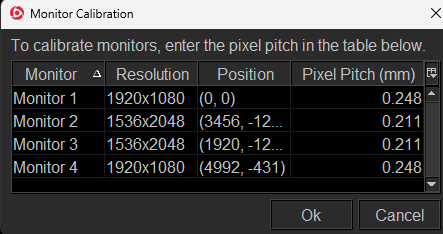
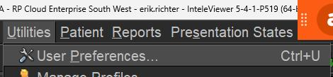
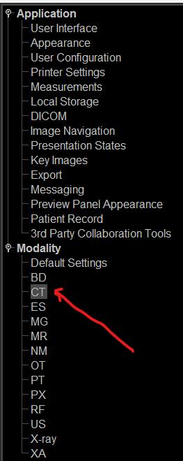
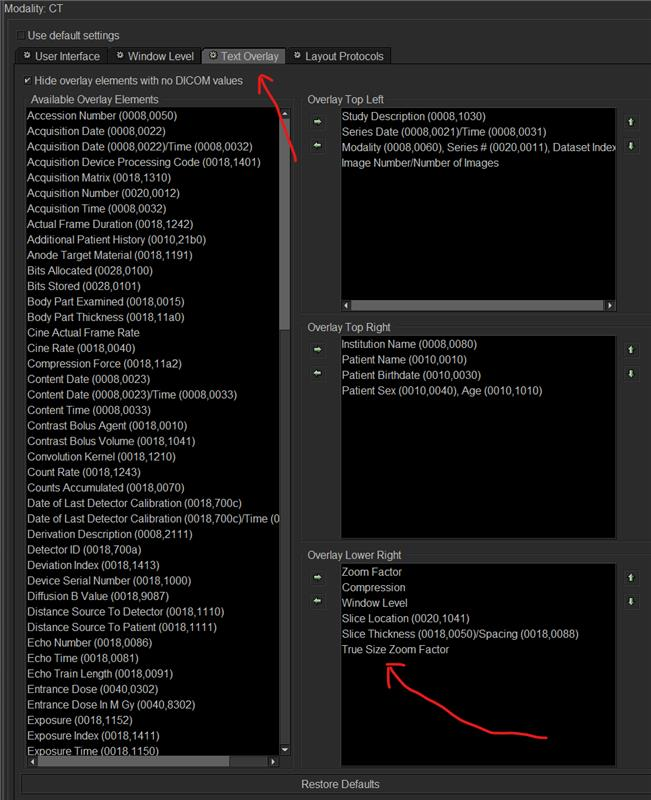

Enable True Size Zoom (InteleViewer setup)
One-time InteleViewer setup that Spine Labeling and Auto Measure both need — calibrate your monitors' pixel pitch and add the True Size Zoom Factor to the CT image overlay, so MosaicTools can convert pixels to real centimeters.





Why this is needed
Spine Labeling and Auto Measure both work in real-world size, not pixels. Spine Labeling spaces vertebral bodies using their physical height in centimeters, and Auto Measure reports a lesion's long and short axes in millimeters. To do that, MosaicTools has to know how many millimeters one screen pixel represents at the zoom you're currently viewing — the image's calibration.
InteleViewer already computes this as its True Size Zoom Factor, but it only exposes it where MosaicTools can read it if you add it to the image text overlay. Once it's on the overlay, MosaicTools reads it automatically each time you trigger the tool — no ruler, no manual step.
Without True Size Zoom on the overlay, both tools decline rather than guess:
- Spine Labeling refuses with "needs True Size Zoom."
- Auto Measure declines with "cannot calibrate" instead of pasting a wrong number.
This is a one-time, per-workstation setup, and it has two parts — both required:
- Calibrate your monitors so InteleViewer knows the physical size of a screen pixel.
- Add the True Size Zoom Factor to the overlay so MosaicTools can read the zoom.
Part 2 alone is not enough. The True Size Zoom Factor is a percentage; it only becomes millimetres when combined with your monitor's pixel pitch. Without calibration there is no pitch to combine it with.
Tip: Auto Measure re-reads the True Size Zoom at the moment you trigger it, so it stays correct even if you change the on-screen zoom between measurements — as long as the factor is on the overlay.
Part 1 — Calibrate your monitors (required)
InteleViewer needs to know how many millimetres wide one screen pixel physically is. That number is the pixel pitch, and you set it in Utilities → Monitor Calibration….
Open Monitor Calibration. In InteleViewer, go to Utilities → Monitor Calibration…
Enter the pixel pitch for every monitor you read on. The dialog lists each display with its resolution and position. Fill in the Pixel Pitch (mm) column and click Ok. Diagnostic monitors and consumer monitors usually differ — a 1536×2048 diagnostic panel might be
0.211while a 1920×1080 monitor beside it is0.248. Your monitor's specification sheet lists it; it is sometimes called dot pitch or pixel size.
InteleViewer saves these to its own workstation.config, and MosaicTools reads the pitch from there for
whichever monitor the image is on — no separate MosaicTools setting to keep in sync.
Calibrate every monitor, not just one. If you measure on a monitor that has no pitch entered, MosaicTools falls back to the first calibrated monitor in the list. It will not warn you — it will quietly measure with the wrong scale. Between a
0.248and a0.211panel that is a ~17 % error in every measurement.
Part 2 — Add True Size Zoom Factor to the overlay
Follow the three screenshots below in order.
Open User Preferences. In InteleViewer, go to Utilities → User Preferences… (or press Ctrl+U).
Pick the CT modality. In the left-hand tree, under Modality, select CT. (Repeat for any other modality you measure on — e.g. MR — using that modality's own section.)
Add "True Size Zoom Factor" to the overlay. Open the Text Overlay tab. In the list of Available Overlay Elements, find True Size Zoom Factor and add it to one of the overlay corners (the screenshot uses Overlay Lower Right). Apply/OK to save.
That's it. Reload a study and you'll see True Size Zoom Factor in the corner of the CT image — Spine Labeling and Auto Measure will now calibrate automatically.
Troubleshooting
- Still says "needs True Size Zoom" / "cannot calibrate": confirm the element is on the overlay for the modality you're viewing (CT settings don't apply to MR), and that the overlay text isn't hidden. If "Hide overlay elements with no DICOM values" is checked, the factor still shows because InteleViewer computes it live — but verify it's actually visible on the image.
- Wrong-looking measurements: two likely causes. Either you added a plain Zoom Factor instead of True Size Zoom Factor (different rows in the list), or the monitor you were measuring on has no pixel pitch set — check Utilities → Monitor Calibration… and confirm every row has a value.
- Measurements off by a consistent percentage: that is the signature of the wrong pixel pitch, not a bad detection. A measurement that is uniformly ~15–20 % out usually means the tool fell back to a different monitor's pitch. Compare the pitch values of the monitor you read on and the first one in the list.